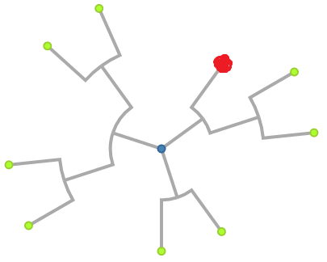
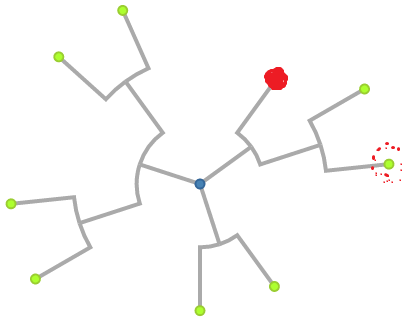

Introduction
In this test, we will show you a tree visualization
and you will answer questions about this data.
There is a time countdown for each question, and we will hide the visualization once the time is up.
You will have to provide an answer for each question before continuing.
You will be provided with your turk-code after you finish the study.
Try and answer correctly as fast as possible.
How to interpret the tree visualization for the tasks
Please take some time to review the following information on how to interpret tree visualization.
You will perform the task with either a radial tree or a horizontal tree as shown in the image below
A tree has a parent-child hierarchy, with the root being the highest
on the hierarchy, and the leaves being the lowest on the hierarchy
Tasks you will be performing for this study
Task1: You will determine how many levels deep is a highlighted node.
Task2: You will determine if a highlighted node is deeper than another node
Task3: You will determine which of two branches has a larger number of nodes.
You can see example task instances with answers for the tasks below.
Sample Question instances and answers for Task1
Note: All nodes selected as part of each question are highlighted red.
-
How many levels deep is the highlighted node?

Answer: 2
Sample Question instances and answers for Task2
- Is the highlighted node deeper than another node.

Answer: No